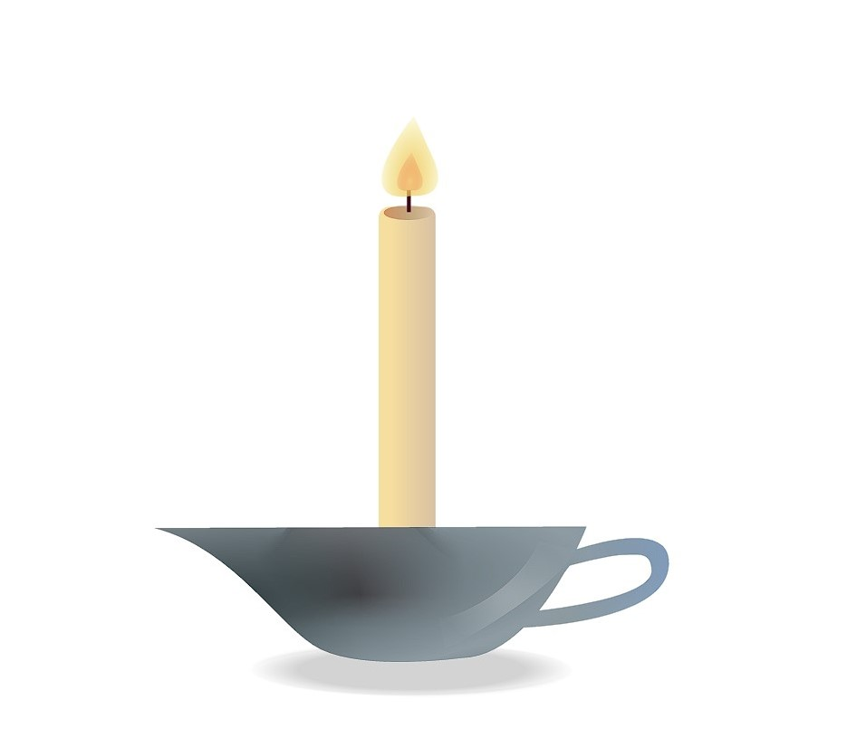
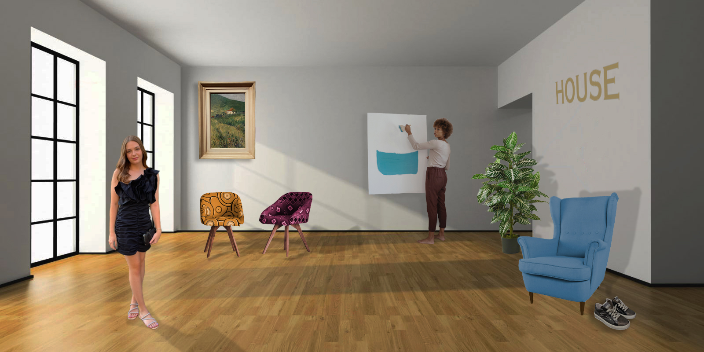

Ovdje su prikazane vježbe i projektni zadaci koje sam radila tijekom semestra.
Vježba 1 - Font
Prvu vježbu sam radila u programu Font Forge, gdje je zadatak bio
kreirati vlastiti font, odnosno ilustrirati slova i znakove.
Vježba 2 - Crtanje Beizerove krivulje
Drugu vježbu sam radila u programu Inkscape, a zadarak je bio nacrtati Beizerovu krivulju u koordinatnom sustavu.
Vježba 3 - Crtanje oblika u Inkscapeu
Treću vježbu sam radila u programu Inkscape, a zadatak je bio
crtanje oblika prema predlošku, dupliciranje, rotitanje i pozicioniranje elemenata.
Vježba 4 - Izrada složenih objekata
Četvrtu vježbu sam radila u programu Inkscape, gdje je zadatak bio
kreirati zadani složeni objekt, isto kao i jedan složeni objekt po vlastitom izboru.

Projektni zadatak 1 - Vektorska grafika
Prvi projektni zadatak sam radila u programu Inkscape,
a zadatak je bio kreirati kompoziciju naučenih tehnika
sa zadanim brojem objekata i funkcija
koje treba napraviti.
Vježba 5 - Retuširanje
Petu vježbu sam radila u programu Adobe Photoshop,a zadatak je bio
maknuti nepravilnosti i greške sa zadanih slika.
Vježba 6 - Koloriranje
Šestu vježbu sam radila u programu Adobe Photoshop, gdje je zadatak bio
kolorizirati sliku, odnosno iz crno bijele slike dobiti sliku u boji.
Vježba 7 - Fotomontaža
Sedmu vježbu sam radila u programu Adobe Photoshop, a zadatak je bio
napraviti realističnu fotomontažu, odnosno izrezati objekte iz više slika,
te ih ukomponirati u jednu smislenu cjelinu.
Projektni zadatak 2 - Fotomontaža
Drugi projektni zadatak sam radila u programu Adobe Photoshop,
gdje je zadatak bio kreirati kompoziciju prethodno naučenih tehnika
sa zadanim brojem objekata i funkcija koje treba napraviti. Prvo je
trebalo ispraviti greške i nepravilnosti na pozadinskoj slici, a onda izrezati
elemente dodati ih na pozadinsku sliku, promijeniti im veličinu, kolorizirati ih,
te naposljetku dobiti iz svega jednu smislenu cjelinu.

Vježba 8 - Izrada kinemagrafa
Osmu vježbu sam radila u programu Shotcut, gdje je zadatak bio
napraviti kinemagraf odnosno spoj pokretne i statične slike.
Vježba 9 - Obrada videa i zvuka
Devetu vježbu sam radila u programu Adobe Premiere Pro, a zadatak je bio
odrezati i spojiti nekoliko videa, dodati im efekte, prijelaze, tekst i zvuk.